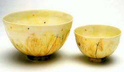

Domestic pots have gone hand in hand with human
civilization. What does hand made functional ware bring into
our lives that a cheap, useful, factory-made bowl from Woolworths
doesn't? This question strikes at the heart of our capitalist
society where convenience and conformity have become goals
and “lifestyle” has replaced life. In this world
the fast food equivalent of pottery has led to a bulimic gorging
where a smorgasbord (so to speak) of faddish dishes in the
latest colors and “contemporary” shapes have replaced
meaningful objects; functional pots made by potters bringing
the concerns of the domestic world into direct contact with
the concerns of the artistic world.
The
privilege of using handmade pots is that they contain the
idea of human endeavor, a link with other people not with
factories or corporations. Most people haven’t lost
touch with this concept when it comes to food. A home cooked
meal is still the epitome of good, nourishing food for the
body and soul. But society as a whole has lost contact with
the fact that pots can do the same thing. By only buying useful
and fashionable pots from Ikea we lose touch with something
in ourselves, in the same way as if we eat at MacDonald’s
every night. We begin to feel that everything should be blatant,
the main reason for eating or owning pots is immediate gratification.
We forget that there is value in taking time to appreciate
things and what is left is a jaded palate and a yearning to
eat / buy everything with a hunger for nothing.
I want to consider two aspects of functional
ware in the 21st century. The first is how potting enriches
the life of the maker and the second is how handmade pots
enrich the life of the user. A quote from Canadian potter,
Brother Thomas Bezanson illustrates this concept. Brother
Thomas speaks of the artist’s experience as being a
"vision quest" and the creation of art as providing
a link between the world of the mundane and the world of the
spirit, he says "Artist's experience opens their own
hearts to a larger reality and their work opens ours."
It is my contention that, although useful, cheap, factory
made pots are readily available, handmade domestic ware builds
on a tradition of human/pot interaction that is as relevant
to the 21st century as it was to the 1st.
The value that these pots bring into our lives
has changed from being pure necessity, when the town potter
was as essential as the baker or the farrier to handmade pots
performing a spiritual function. The presence of handmade
domestic ware has become a symbol of the link between artist
and community, the importance of a skill that takes time to
learn, a calm, individual voice amid the mass-produced. In
this world of fast food, and corporate control of “good
taste “ in everything from clothing to home wares the
handmade pot represents an investment in individualism, an
aesthetic that values patience and celebrates humanity in
objects.
The availability of factory made ware has led
to a gradual and insidious “de-texurization” of
the home. The uniformity and smoothness of factory made pots
and other domestic objects is beautiful in itself and these
objects of design and manufacturing processes function as
doorways to ideas, but these are not the same ideas as the
ideas in a handmade pot. The products of factories can bring
up ideas about the design, the manufacturing process, the
role of human imagination in an industrial world. Handmade
pots can bring up ideas of process, the role of the artist,
and human skill, and how it is transformed by creativity.
The connection between the human and the object, in a handmade
pot is so strong that the very word “hand-made”
has come to signify a fanciful, stereotype and, as with Sara
Lee “home baked” apple pies is often applied to
things which are not hand-made at all. Companies that peddle
lifestyle such as Country Road and Ikea are aware of the individual
appeal of the hand-made and often include factory made items
designed to reference the hand made. These items may include
texture, or in the case of pottery (horror of horrors!!!)
fake throwing lines. To engage with the many concepts objects
bring into domestic life there must be balance, the industry
of making beautiful things accessible through mass reproduction
can exist side by side with the industry of creative individuals
making pots alone in the studio.
Individuals creating objects to be used in the
domestic context are integral to a fully rounded society.
The studio potter combining skill, intellect and spirit in
their works is more than a happy artist doing what they love.
Like the pots themselves this individual embodies a greater
idea, the notion that there is a link between everyday life
and spiritual fulfillment the possibility of a world where
objects are meaningful, beyond the vagaries of fashion and
commerce. I think through it's very functionality domestic
ware can slip in where other examples of "art" would
not be welcome. Pots can do this in a very important way,
in the intimate space of the home. Walter Keeler spoke about
this at a conference on “Form and Function” in
London last year claiming that functional ware within the
home "speaks" a language that is deeply connected
to the experiential. Keeler explores the notion that pots
escape from the boundaries of visual art through their use
and as a consequence "the experimental language of functional
ceramics can chatter away to us". The language of handmade
pots within the home is a complex one. Every time we put a
cup or bowl to use we are initiating a series of ideas connecting
artists to the home.
Unlike other forms of original art such as
painting and sculpture handmade pottery has been able to enter
homes regardless of socio-economic status or level of education.
It is an art form that can be non-threatening and I see this
as one of the most valuable aspects of handmade pots. Although
many handmade pots end up in the back of the pantry gathering
dust- the relics of anniversaries long gone, many others are
in constant daily use. The practicality of these pots opens
the possibility of connection between the world of ideas and
the world of making the meals/ doing the dishes. Food symbolizes
many things in our lives and Nana’s milk jug or favorite
teacup becomes a part of the love and rituals of communication
in these relationships. Bridges can be mended (or broken!)
over a cup of tea, asking someone over for a meal or up for
a cup of coffee is an entrenched part of the courting ritual.
Later down the track there is nothing like the satisfying
crash of a piece of china smashing against a wall to illustrate
your point. What other form of art is so intimately involved
in the minutiae of life?
The connection between the maker and the user
is one of the most valuable, and joyful aspects of my work
as a potter. Creating work that enters daily life and has
the possibility of comforting someone when they feel sad or
lonely, being part of their morning daydreams or nightly ritual,
is a great honor not shared by all artists. The very fact
that handmade pots are not quite the stuff of “cutting
edge” exhibitions is their greatest strength. It has
been said that making handmade functional pots represents
the conservative side of ceramic art but what could be more
radical than entering the home, and affecting the inhabitants
on a regular basis?
Where
handmade pots come into their full strength is in the fact
that intimate relationships are joined by a third, more nebulous
party. Where handmade pots are invited to tea the artist or
rather the idea of the artist is also invited. The knowledge
that the bowl or jug you are using has been crafted by another
human being brings individuals into contact with one another.
This creates a community of potters/artists and users. Where
in the past the pot would most likely have been made by a
local person using local materials and working within the
immediate geographic locale, handmade pots now travel far
and wide disseminating their strange mixture of signs and
symbols miles from where the clay was first mined. Since the
first wondrous porcelain made its way out of China handmade
pots have carried with them portents and echoes of other lives.
If we were to “read” a handmade
domestic pot as scholars read texts we would find that this
useful object symbolizes much more than what its function
might suggest. In this reading the knowledge that the pot
is indeed handmade and not the clever product of some machine
is the most important concept. It is implicit in this pot
that it is the product of meaningful work, the outcome of
a series of creative decisions bounded by the functional form
and the limits of the clay. We are all products of our environment
and every thumbprint on a blob of clay is a record of that.
The line of a thrown bowl says as clearly as our handwriting
who we are and what we are about. Handmade pots also encompass
the idea of beauty. While most potters would deny that their
work ever reaches that perfect balance of form and function
where the glaze, function and spirit of the pot appears effortless
and seamlessly combined, most potters eagerly and fearfully
open the kiln, mentally crossing their fingers and praying
that there will be just one magnificent pot. Handmade pots,
ranging from the first, imperfect wobbly efforts through to
the work of accomplished craftspeople strive for beauty and
it is in their striving that they connect us to one another.
Joan Chittister in her wonderful essay “Thirst For Beauty
Thirst For Soul” speaks about the role of the artist
in bringing beauty into our lives;
“Beauty, in other words, lifts life out of the anaesthetizing
effects of the pedestrian and gives us reason for going on,
for being, for ranging beyond our boundaries, for endeavoring
always to be more than we are. It enables us to pause in time
long enough to remember that some things are worth striving
for, that some things are worth doing over and over again
until they become their breathless selves... Beauty is a moment
in time that must be captured so that the human heart can,
in the midst of pain and despair, cling to the notion that
that which is capable of bearing beauty is capable of bringing
new life, is capable of pervading the world, is able by penetrating
our own souls to penetrate the ugliness of a world awash in
the cheap, the tawdry, the imitative, the excessive and the
cruel.” (pp.11-12 Creation Out of Clay, Wm B. Eerdmans
Publishing Co, 1999)
Chittister believes that the artist can bring this element
into our lives and this essay was written about a potter-
Brother Thomas. If, as Chittister writes our lives are awash
in cheap, tawdry imitations then it is our homes and immediate
surroundings that are affected. While the beautiful, thought-provoking
contents of art galleries may provide illumination and inspiration;
in the midst of domestic isolation and over-work one is more
likely to come across the cup of tea or bowl of salad.
The work of being a potter, learning skills, translating them
into objects of beauty and utility, focuses our minds. The
repetition in the studio and rhythm of the firing schedule
all form a solid background to the unpredictability disastrous
and beautiful of the finished product. Work is an individual
thing and I can only speak of what working as a potter has
given me, and my hopes for work in the future. The most important
thing I learnt in my early years of potting was patience.
Not waiting for pots to dry was the cause of many an early
failure, trying to unpack, glaze and pack a kiln all on the
same day another one. Unlike drawing and painting, my previous
areas of study, where the materials were torn, and manipulated
in various violent ways for immediate effect here was clay,
a material that bossed me around. And glaze a mysterious wet
substance that I crossed my fingers and hoped like hell would
do what it was supposed to. These materials rewarded me not
with obedience but with unpredictability, and gradually I
learnt to relax and respect the natural rhythms and I grew
to love being bossed by my materials and working with them
rather than trying to subdue them. Potters throughout the
ages have worked in the same way and after years of the rhythm
of the work sometimes, the work is elevated into something
more than itself, what used to just be a serviceable salad
bowl now functions as a sculpture. How can we define this
quality that turns work from mundane into transcendental?
We can’t define it, it is like beauty, the secret spice
of life that brings other flavors into balance, we don’t
know what it is but we know when we see it.
Article courtesy Shannon Garson
©. Shannon is a studio potter
living and working in Brisbane, Australia. She was the winner
of an Award of Excellence at the 2003 Gold Coast International
Ceramic Art Award and was granted a Churchill Fellowship
in 2004.
More Articles
{kind=link}